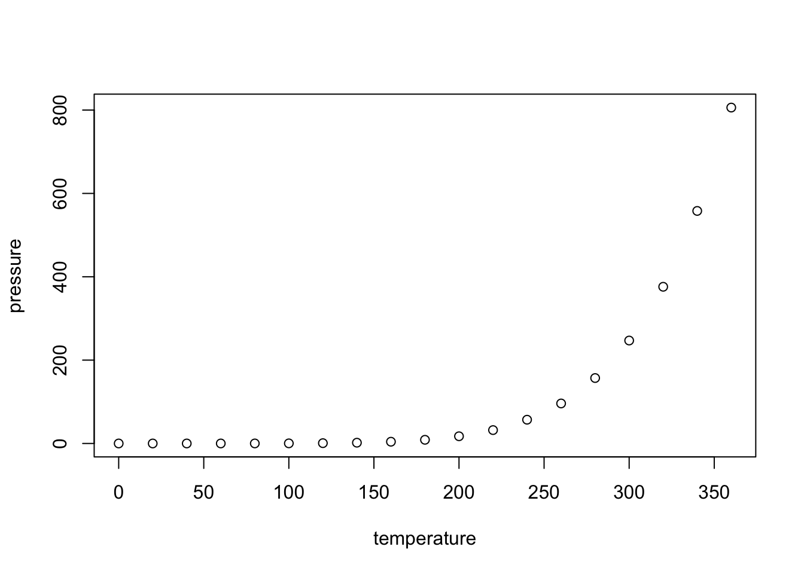

第 3 章 GUN Make
本章中我们将介绍如何使用GUN Make工具来帮助我们实现更为便捷的可复现数据分析。对于绝大多数数据分析人员，Make是一个完全陌生的概念；但对于软件工程师而言，Make则是再熟悉不过的工具。Make起源于1976年，是软件工程开发人员为了将多文件组成的复杂软件工程搭建过程自动化的工具。本章中，我们要解决三个问题：使用Make的必要性，Make的基本语法以及Make的高级语法。
3.1 使用Make的必要性
当前，数据分析已经成为一个系统性工程。从工程的视角来看，一个数据分析项目至少包括数据获取，数据清理，数据分析，结果展示，以及最终开发数据产品等环节。设想一下有一个三人合作的经济学研究项目，Alice负责从网页爬取数据，Bob负责原始数据的清理，Eve用机器学习的方法从数据中定义一个变量，然后Alice在用Bob和Eve的数据跑回归模型，Bob擅长分析结果的可视化展示，最后Alice写研究论文。该项目中的复杂性来自两个方面：第一是多人协同，三个合作者的工作是相互依赖的。例如，Bob需要Alice的原始数据作为输入，Alice的回归则依赖于Bob和Eve的数据清理结果，这种相互依赖性会意味着数据分析某一环节的变化（例如改变了对缺失值的处理方法）都会引起其后续步骤的变化；第二是多语言协同。之所以出现多语言协同，可能是因为不同合作者擅长的语言各异，更重要的是在这个项目中，Alice使用的是Python、Stata、Latex，Bob使用R，而Eve使用python, 本来就没有一个语言是各方面都是最优的。实际上，“根据任务特性选择合适的语言”本就是数据工程的一个重要原则。多语言意味着没办法将所有的代码整合进一个文件中。传统地，我们以来人工协同来完成数据分析项目，但是人工协同不但非常耗时，还增加了出错的概率。
Make为我们管理数据工程提供了自动化解决方案。首先，Make定义了数据分析的“菜单”，菜单上定义了所有文件的执行顺序与依赖关系。之后，我们可以在命令行使用make命令，与项目相关的所有相关文件将会按照菜单顺序依次执行。其次，Make是一种语言独立（Language Agnostic）的工具，这使得Make可以将任何语言的代码加入数据流（Data Pipeline）当中，在管理数据工程时非常灵活。
## Make安装
make –version
[Make for windows])(http://gnuwin32.sourceforge.net/packages/make.htm)
3.2 快速上手Make
Make的工作原理 Make allows you to construct a direct acyclic graph of dependencies amongst the files in your data analysis project. make is a domain-specific language for encoding a dependence graph. In this graph, a node is a file, and each node contains instructions on how to synthesize that file from its dependencies. By invoking make file, the user instructs make to synthesize file
Make的语法简单明了，其基本规则如下：
target是make执行的目标prerequisites是生成target的所有依赖.target与prerequisites使用冒号连接command是生成target需要执行的命令，可以使任意的shell命令。command前使用制表符\t缩进
多个上述基本单元放在一起形成一个完整的文件依赖系统，Make根据target与其prerequisites时间关系来判断是否需要执行command中的命令。只要prerequisites中至少有一个文件比target更新，command的命令就会被执行。
引入前面的例子，用前面的例子说明make是如何工作的。
之所以有一些语法看不懂，是因为对shell的命令不太清楚
- define something
- dummy target
Make 语法是否执行的原则。 Make target 需要举一个例子作为不同的部分，这个地方需要画图加上去，然后要准备后续的部分，科学家的要处理起来 然后准备机器学习的课件
3.3 Make的高级语法
SHEBANG符号#!位于Unix系统脚本的第一行，用于指明执行该脚本的解释程序。符合以下规则：
- 脚本文件中没有
#!这一行，那么它执行时会默认用当前Shell去解释这个脚本(即：$SHELL环境变量）； #!之后的解释程序是一个可执行文件，那么执行这个脚本时，它就会把文件名及其参数一起作为参数传给解释程序去执行。#!指定的解释程序没有可执行权限，则会报错“bad interpreter: Permission denied”。#!指定的解释程序不是一个可执行文件，那么指定的解释程序会被忽略，转而交给当前的SHELL去执行这个脚本。#!指定的解释程序不存在，那么会报错“bad interpreter: No such file or directory”。注意：#!之后的解释程序，需要写其绝对路径（如：#!/bin/bash），它是不会自动到$PATH中寻找解释器的。
定义变量
Automatic variables
- $@: 目标的文件名（包括“路径/文件”）
- $<: 第一个依赖
- $^: 所有依赖
- $(@D): 目标的路径/文件夹部分
- $(@F): 目标的文件部分
- $(<D): 第一个依赖的路径/文件夹部分
- $(<F): 第一个依赖的文件部分
Pattern rules The key idea is that you can use the symbol % as a wildcard, to be expanded to any string of text.
结合例子会更加清楚
使用条件判断
使用函数
记录写作心得： 信息爆炸会带来迷失！我们要做的是一个输入负熵的工作！ 我不缺少知识，缺少的是一个好的体系。 相当于遇到什么问题，应该使用何种工具，以及在哪找到这个工具。每个工具在网络上都有非常丰富的资料。 本书只提供作者认为最优的解决方案 所以本书提供的是一个最简洁的工具箱，为我们提供线索。
需要继续修改一下模板，对latex语法有深入的理解，自己改一个模板出来
为了更好地编辑，我们需要另一个功能模块argparse，一个从R内部解析命令行参数的工具。我们通过什么
程序定义它需要的参数，然后 argparse 将弄清如何从 sys.argv 解析出那些参数。 argparse 模块还会自动生成帮助和使用手册，并在用户给程序传入无效参数时报出错误信息。
添加参数 提取参数
用一个例子
.PHONY: all clean
.DELETE_ON_ERROR:
.SECONDARY:3.4 参考资料
https://bost.ocks.org/mike/make/
http://matt.might.net/articles/intro-to-make/
http://stat545.com/automation04_make-activity.html
https://seisman.github.io/how-to-write-makefile/introduction.html
有不错的R例子，然后还有其他课程资源
Managing Projects with GNU Make, Third Edition Make Documents
## speed dist
## Min. : 4.0 Min. : 2.00
## 1st Qu.:12.0 1st Qu.: 26.00
## Median :15.0 Median : 36.00
## Mean :15.4 Mean : 42.98
## 3rd Qu.:19.0 3rd Qu.: 56.00
## Max. :25.0 Max. :120.003.5 Including Plots
You can also embed plots, for example:

Note that the echo = FALSE parameter was added to the code chunk to prevent printing of the R code that generated the plot.